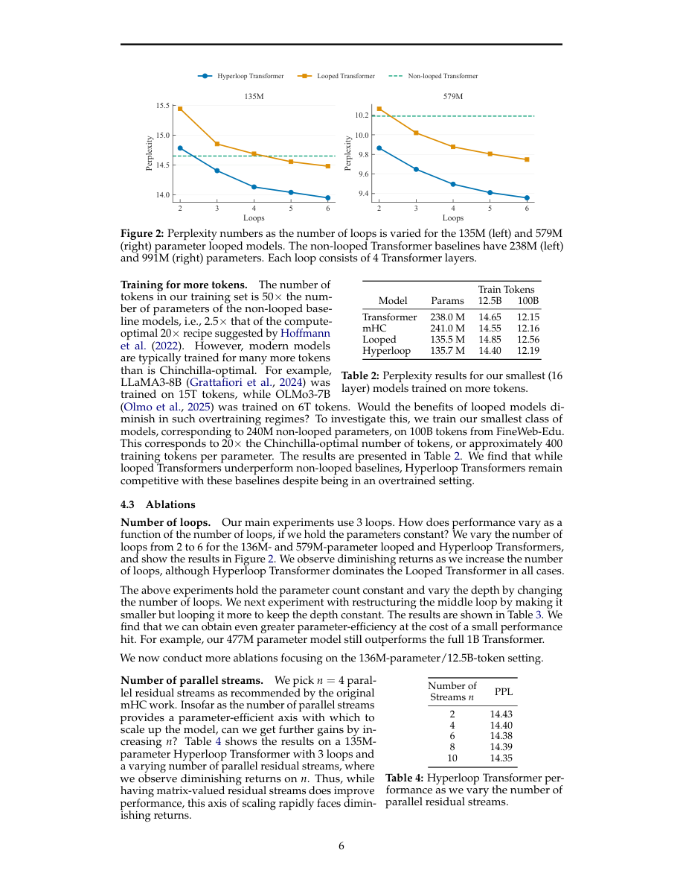

#1
★ 7/10
Hyperloop Transformers
超循环Transformer（Hyperloop Transformers）

图 Figure · Page 6 of paper
🎯 用约一半参数量超越标准Transformer的循环超连接架构
A looped Transformer with hyper-connections that matches full model quality at ~50% fewer parameters.
| 维度 | 中文 | English |
|---|---|---|
| ❓ 待解决 的问题 |
在手机、边缘设备等内存受限场景部署大语言模型非常困难，因为标准Transformer的参数量庞大、内存占用高。现有架构研究大多关注计算速度和延迟，却忽视了参数量本身带来的内存瓶颈。我们需要一种在大幅减少参数的同时仍保持模型质量的新架构。 | Deploying large language models on edge and on-device hardware is challenging because standard Transformers have enormous memory footprints tied to their parameter counts. Most architecture research focuses on compute/latency efficiency but ignores how many parameters (and thus how much memory) a model needs. There is a need for architectures that maintain high model quality while drastically reducing parameter count. |
| 💡 解决 的亮点 |
• **循环Transformer主干**：将模型的"中间块"层权重在深度方向上反复复用（循环），大幅削减参数量，同时保留足够的计算深度。 • **三段式结构设计**：模型分为起始块、中间循环块、结束块，让输入输出有专属处理层，循环部分专注高效特征提取。 • **循环边界处的超连接**：在每次循环结束后引入矩阵值残差流（超连接），以极少的额外参数改善跨循环的信息融合，是本文最核心的创新点。 | • **Looped Transformer backbone**: Layers in the "middle block" are reused (looped) multiple times across depth, dramatically cutting parameter count without sacrificing depth of computation. • **Three-block decomposition**: The model is split into begin, middle (looped), and end blocks, giving the network unique input/output processing while keeping the recurrent middle efficient. • **Hyper-connections after each loop**: Matrix-valued residual streams (hyper-connections) replace scalar residuals only at loop boundaries, adding negligible parameters while improving information mixing across loops. |
| 🧪 实验 内容 |
作者在多个模型规模下训练Hyperloop Transformer，并在标准语言建模基准上进行评估。对比基线包括：深度匹配的标准Transformer（层数相同、参数完整）以及mHC Transformer（在每一层都使用超连接但不做循环）。此外还测试了训练后权重量化的鲁棒性，以验证其在内存受限设备上的实际部署价值。 | The authors trained Hyperloop Transformers at multiple model scales and evaluated them on standard language modeling benchmarks. Baselines included depth-matched standard Transformers (same number of layers, full parameters) and mHC Transformers (hyper-connections applied at every layer without looping). They also tested robustness to post-training weight quantization to assess real-world deployment suitability on memory-constrained devices. |
| 📊 实验 结果 |
在所有测试规模下，Hyperloop Transformer均超越了深度匹配标准Transformer和mHC Transformer两个基线，且参数量减少约50%。在训练后权重量化后，性能优势依然保持，证明参数节省能直接转化为内存节省，且不损失实际部署质量。摘要中未披露具体benchmark分数，但论文指出跨规模的提升是一致的。 | Hyperloop Transformers outperform both the depth-matched standard Transformer and the mHC Transformer baselines across all tested model scales while using approximately 50% fewer parameters. The quality advantage persists after post-training weight quantization, confirming that the parameter savings translate directly to memory savings without degrading performance in realistic deployment scenarios. Specific benchmark numbers are not disclosed in the abstract, but the gains are described as consistent across scales. |
| 🏁 结论 | Hyperloop Transformer证明了将层循环与关键位置的超连接相结合，可以让语言模型在参数量减少约50%的情况下仍能匹敌甚至超越全参数基线，量化后优势依然存在。这为边缘设备和端侧大模型部署提供了一种切实可行的内存高效架构方案。 | Hyperloop Transformers prove that combining layer looping with strategically placed hyper-connections enables language models to match or exceed full-parameter baselines at roughly half the parameter count, even after quantization. This establishes a practical, memory-efficient architecture well-suited for edge and on-device LLM deployment. |
| 🔗 论文 链接 |
arXiv: 2604.21254v1 · 📥 PDF | |
⚙️ Method · 方法详解
该架构将Transformer分为三段：起始块、中间块和结束块。中间块的层权重在深度方向上被反复共享使用（即"循环"），少量参数等效实现了更深的网络计算。每完成一整轮中间块的循环后，模型插入"超连接"：将标准的标量残差流升级为矩阵值残差流，使不同循环轮次之间的信息能够更丰富地融合。由于超连接只在每次循环的边界处插入，而非每一层都有，额外引入的参数量和计算量极小。起始块和结束块则使用普通非循环Transformer层，分别负责输入和输出的专项处理。
The architecture divides a Transformer into three sequential blocks: a begin block, a middle block, and an end block. The middle block is a stack of Transformer layers whose weights are shared and applied repeatedly (looped) across depth, so a small set of parameters effectively acts as a much deeper network. After each full loop of the middle block, hyper-connections are applied: these replace the standard scalar residual stream with a matrix-valued residual stream, allowing richer mixing of information between loop iterations. Because hyper-connections are only inserted at loop boundaries rather than at every layer, their parameter and compute overhead is minimal. The begin and end blocks use standard (non-looped) Transformer layers to handle input-specific and output-specific processing.
📐 Key Formulas · 关键公式
\[\mathbf{H}^{(l+1)} = \text{HyperConn}\left(\text{LoopedMiddle}^{(l)}(\mathbf{H}^{(l)})\right)\]
💡 每次中间块循环结束后，超连接作用于矩阵值残差流，融合跨循环信息；H表示隐藏状态，l为循环轮次索引。
After each loop of the middle block, hyper-connections are applied to the matrix-valued residual stream H to enrich cross-loop information mixing; l indexes the loop iteration.
\[\text{params}_{\text{Hyperloop}} \approx 0.5 \times \text{params}_{\text{Standard Transformer}}\]
💡 通过中间块权重共享（循环），Hyperloop Transformer的总参数量约为等深度标准Transformer的50%。
By sharing weights in the looped middle block, the total parameter count of a Hyperloop Transformer is approximately half that of a depth-matched standard Transformer.
🌟 Why It Matters · 为什么重要
随着大语言模型越来越多地被推向手机、可穿戴设备等端侧部署场景，内存占用已成为比计算速度更关键的瓶颈。本文提供了一种可扩展的具体解决方案，在不牺牲模型质量的前提下将参数量减半，有望让此前无法运行LLM的硬件也能部署有能力的语言模型。
As LLMs are increasingly pushed toward on-device deployment (smartphones, wearables, embedded systems), memory footprint becomes the primary bottleneck—not just compute. This paper offers a concrete, scalable solution that halves parameter count without sacrificing quality, potentially enabling capable LLMs on hardware that was previously out of reach.